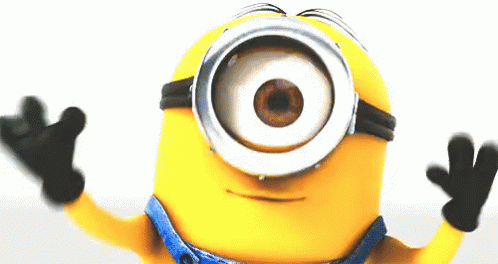

HOME
Bem-vindo ao nosso site sobre Meu Malvado Favorito!
Aqui você vai mergulhar no mundo divertido, caótico e cheio de aventuras do vilão mais querido do cinema: Gru, e seus inseparáveis ajudantes amarelos, os Minions!

Explore curiosidades, informações sobre os personagens, imagens incríveis e vídeos divertidíssimos que marcaram essa animação que conquistou o coração de crianças e adultos ao redor do mundo.
Prepare-se para rir, se emocionar e, claro, se apaixonar pelos Banana Lovers mais famosos do planeta!
